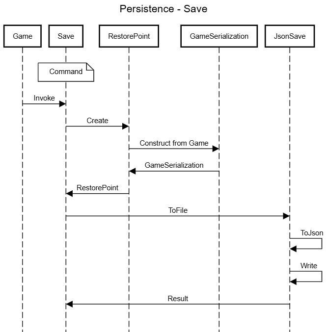
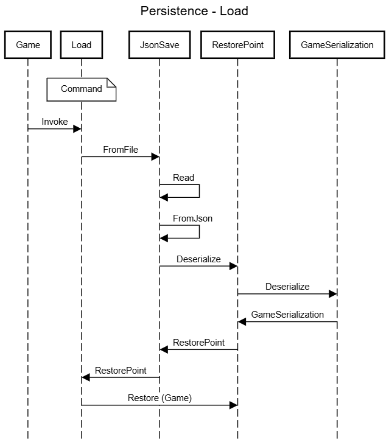

Persistence
Overview
NetAF provides persistence for game states. This allows a game to be saved and restored at any time.
Saving
Creating a restore point
A named restore point can be created at any time by using the RestorePoint class:
var restorePoint = RestorePoint.Create("File 1", game);
RestorePoint will serialize the state of the game so that it can be restored later. However it still needs to be saved to file if persistence is required.
Saving a restore point to file
NetAF uses Json for persistence as default, provided by the JsonSave class:
JsonSave.ToFile(@"C:\save.json", restorePoint, out _);
Note: The extension is not important. Any extension can be used.
Loading
Loading a restore point from file
A restore point can be loaded from file using the JsonSave class:
JsonSave.FromFile(@"C:\save.json", out var restorePoint, out _);
Applying a restore point to a game
The restore point can then be applied to a game to restore the state of the game:
restorePoint.Game.Restore(game);
Commands
To simplify adding persistence to your game the Save and Load commands have been added.
Both Save and Load are custom commands, which means they can be applied to any IExaminable. This gives you the power to choose how you implement saving and loading. Add these commands to the PlayableCharacter or Overworld to have them always available, or add them to items, rooms or any other in game object.
Item typewriter = new("Typewriter", "An old style typewriter")
{
Commands =
[
new Save(),
new Load()
]
};
Registering dynamically loaded content
It is recommended to add and remove content in the game by using the IsPlayerVisible property. This allows all content to be loaded when a game is created, which in turn allows serialization to function correctly. When a game is instantiated an instance of AssetCatalog is created which is a key component of serialization. If you choose to dynamically add an Item, NonPlayableCharacter or Room while a game is executing it may not serialize correctly as it will not be in the games AssetCatalog. This may be acceptable, however if you wish for the IExaminable to be serialized you need to register the instance of the IExaminable with the games AssetCatalog.
Item sword = new("Sword", "The sword of destiny");
game.Catalog.Register(sword);
By registering with the AssetCatalog the game will be able to resolve references to the object when deserialization is applied.
Sequencing
Save

Load
